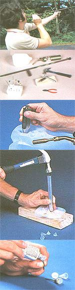

It's not a toy, but that doesn't mean you can't have fun with this homemade "plinker. "
Here's a riddle for you: What's black and white and blew all over? You'll never guess in a million years, so we'll tell you: the darts from an honest-to-gosh homemade blowgun ...one that even a big spender would have trouble sinking more than two or three dollars into!
Yep, that's right, no longer is the blowgun the bane of Amazon explorers. It's now graduated to the other extreme, the realm of high-tech-with coated, thin-walled alloy barrels, modern plastic-and-steel darts, and even specially designed mouthpieces. And make no mistake: This new breed of diaphragm-powered dart launchers has evolved beyond the casual toy stage and into the bailiwick of the serious enthusiast.
The trouble is, fancy blowguns sell for $25 or $30, which might be fine for a serious fan, but it's a bit steep for the uninitiated ...and that's precisely why we developed this kitchen-table-tech version.
Our blowgun's barrel is made from a length of 1/2" electrical conduit, and the mouthpiece is the dust boot from a Volkswagen "beetle" ball joint. The darts are simply drywall nails or stubs of spring wire, fastened to polyethylene cones fashioned out of discarded plastic milk jugs. Yet, elementary as it is, our cheapo homemade model can hold a 6" pattern at 20 yards and come close to penetrating 1/2" plywood!
If you're game for giving it a try, get yourself a 6' length of 1/2" electrical metallic tubing; a worm-drive, fuel-line-size hose clamp; a tricycle handgrip; some friction or handle-bar tape; a VW ball-joint dust boot (any rubber boot of a similar size and shape would work); an assortment of grooved-shank and box nails or stiff wire rods (half the fun is experimenting to see which dart points suit your needs best); several plastic milk jugs; and a tube of silicone sealant or some modeling clay.
In the way of tools, you'll need a hacksaw, a plumb bob, a file, a propane torch, scissors or a knife, wire cutters, a hammer, a minia ture screwdriver, and a block of soft wood.
Begin by cutting the tube to a length of 3-1/2' to 5' . The shorter the barrel, the easier it'll be to wield the gun ...but you'll be trading of power and accuracy. Next, saw a piece about 4" long from your scrap. To make this into an adjustable handle, merely contour one end so it'll make a clean joint with the barrel, then cut kerfs into the tube about 1/4" below the high sides of the contour. Pass the hose clamp through these slots and around the barrel, then slip the tricycle grip onto the stub. After you've painted the surface of the conduit, tighten the handle at a position that allows your arm to be outstretched but bent slightly when you aim the weapon. Finish up by wrapping fore and aft of the grip with tape. The rubber mouthpiece can then be sealed to the barrel with silicone.
To make the darts, all you have to do is lay one of the empty milk jugs on its side, and with the propane torch set at a low flame, carefully heat an area about the size of a quarter until the plastic turns clear. Then push the pointed end of the plumb bob into the soft spot and hold it there until the dimpled area clouds. Make several rows of cones in this manner (leaving a bit of room between each), and cut the dimpled wall from the jug.
You can use a short piece of scrap tubing to separate the cones from the rest of the sheet. Just bevel one end of the conduit to a sharp edge, then place the plastic-points up-on your wooden block. Center the tubular cutter over each cone to be removed, and give the back of the tube a smart rap with the hammer.
Once you've freed a number of cones, it's easy to make darts out of them by pushing nails or wire stubs through the pointed ends from the inside. A dab of silicone sealant or clay set behind the metal will serve the threefold purpose of securing the point, sealing it, and giving the dart some necessary weight. A bit of research will help you to determine which combination of points and putty works best-though we're partial to drywall nails backed with silicone.
Using the blowgun properly is merely a matter of setting a dart in the mouthpiece end, placing the rubber cup around your mouth, and huffing sharply with your diaphragm. (Don't draw in your breath or you'll risk swallowing the projectile!) Remember, above all, that even though your completed blowgun can be a heck of a lot of fun, it's definitely not a child's toy. Used improperly, it can be a dangerous weapon. So always exercise plenty of caution and common sense during play or practice, and you'll enjoy your "loose change" investment for quite some time.
|
 [1] The blowgun is accurate to 50 or 60 feet. [2] Here's what it will take to make the darts. [3] Heat the plastic and form dimples; [4] remove them; [5] then set the nails with sealant. |
|
|